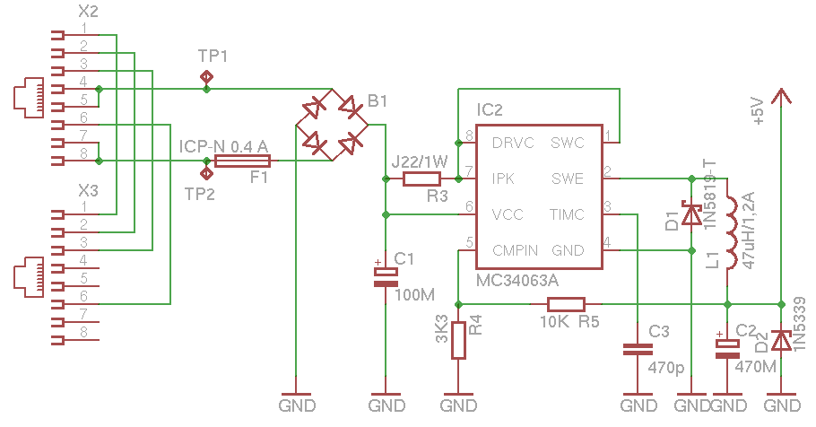
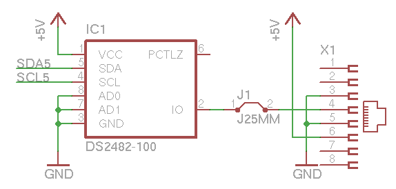

This is a peripheral board for Raspberry Pi with three separate functions:
- Power supply with 12-40 Volt input and 5 Volt, 0.75 Amps output, with short circuit protection and simple passive PoE extractor (utilizes unused pairs in a Fast Ethernet UTP cable).
- 1-Wire controller DS2482-100 connected to I2C bus of Raspberry Pi.
- Real time clock module PCF8583 with backup battery.
All schematics and board layouts are created using EAGLE 6.2.1 beta.
Power supply
The key component of the board is a DC/DC power supply, allowing to power Raspberry Pi and its periprherals from distance, using unused pairs in a Fast Ethernet UTP cable.
WARNING: Only passive PoE extractor is used. This kind of extractor is NOT compliant with IEEE 802.3af and connecting UTP cable with power on unused pairs to standard NIC can cause severe damage to it.

The power supply design utilizes MCP34063A switched mode supply regulator in basic step-down mode. This regulator requires minimum other components for operation:
- The inductor L1 and diode D1, together with switch integrated in the IC forms a step-down converter.
- Current sensing resistor R3 limits maximum available current to 0.75 Amps.
- The R4/R5 divider adjust ouput voltage.
- The D2 is a Zener diode with breakdows voltage 5,6 Volt. In case of failure of the integrated switch in IC2, which would result in uncontrollable growth of output voltage, the D2 break open and limit output voltage till the F1 fuse breaks itself.
- The bridge B1 allow either polarity on the RJ-45 connector. Even alternating current can be supplied.
I2C level shifter

The Rapsberry Pi operates with 3.3 Volt logic. Other components on PoEpi uses 5 Volt logic. Althought it is often possible to directly connect 3V3 I2C with 5V I2C bus, it is better to use a simple MOSFET-based level shifter. This one is based on AN97055 by NXP. Please note that pull-up resistors on 3V3 side (on the left) are already included in the Raspberry Pi.
Using this level shifter also protects Raspberry Pi from being damaged by a high voltage spike from 5V side.
1-Wire controller

DS2482-100 is a standalone 1-Wire master controller for I2C bus, supported in Linux. It could be used to connect various peripherals like thermometers, using quite long cables. It is connected to 5V I2C bus and the 1-Wire output is provided on a RJ-45 connector. The pinout of the connector is almost compatible with DS9490R, so most accessories for DS9490R can be plugged directly into this board. The only difference is 5V power, which is located on pin 6.
Real time clock

The PCF8583 is also connected to 5V I2C bus. The clock is powered by 5 Volt supply when Raspberry Pi is powered on and by Lithium Cell CR2032 otherwise. It uses standard 32768 Hz clock crystal. The frequency can be fine-tuned by the value of the C4 capacitor.
Copyright
Copyright 2013 Ondřej Caletka
This work is licensed under a Creative Commons Attribution 3.0 Unported License.